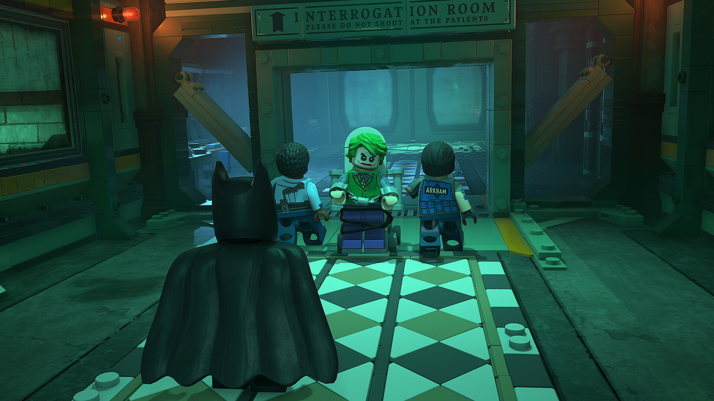
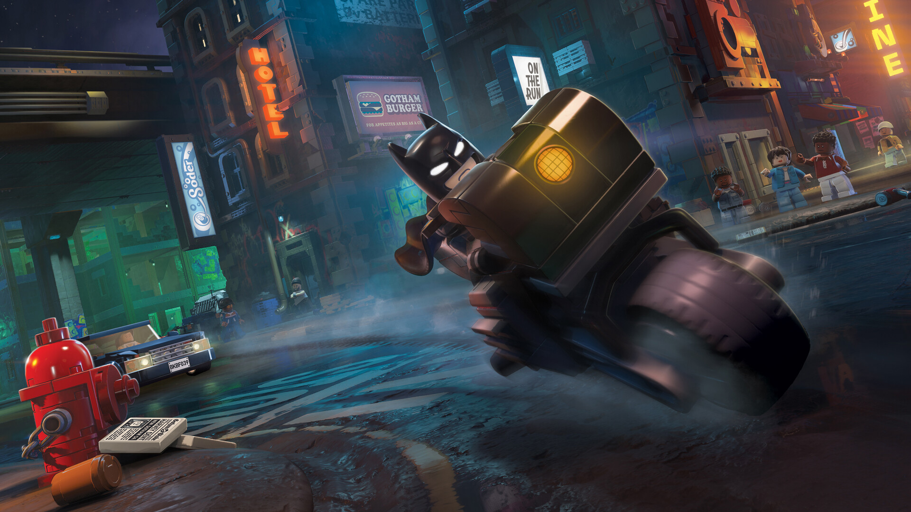
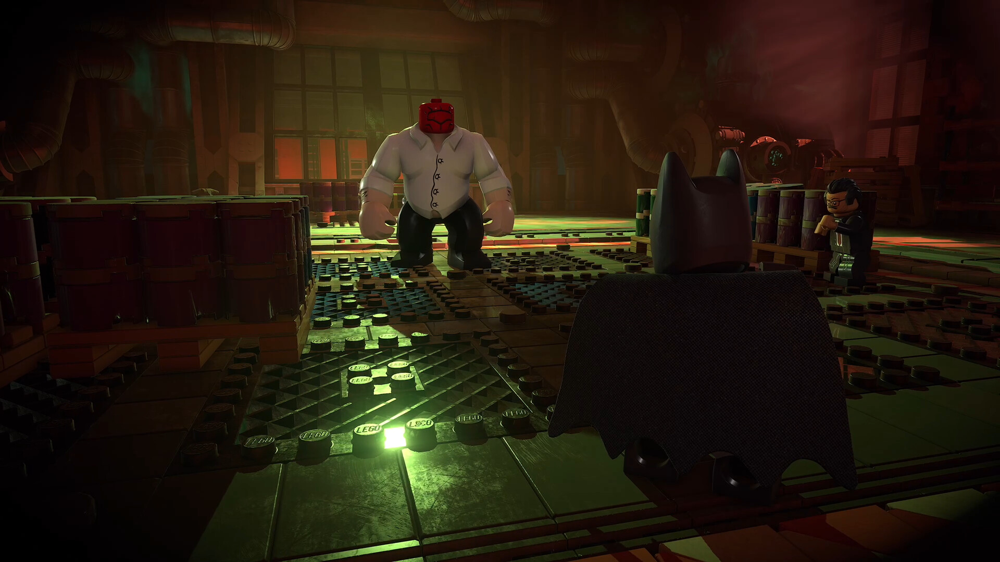

Lucha contra el crimen en las calles y tejados de Gotham. Emplea tus habilidades detectivescas y disfruta de un nuevo y desternillante sistema de combate que mezcla combos fluidos con técnicas de sigilo.

Recorre un inmersivo mundo abierto a toda velocidad mientras conduces una galería completa de batmóviles y batmotos, incluido el legendario Acróbata.

Usa el gancho, planea y conduce por Gotham City mientras descubres delitos, desafíos, recompensas, secretos y lugares tan míticos como el Centro Psiquiátrico de Arkham, Ace Chemicals o la Torre Wayne.

Conviértete en el Caballero Oscuro y combate a los supervillanos más infames de DC en Gotham.

A los fans de Batman™ les espera diversión por partida doble con las emocionantes persecuciones en moto protagonizadas por Batman y Selina Kyle™ en GOTHAM CITY™.

Ayuda a Batman™ a perseguir a los malos en el Batimóvil Blindado, impresionantemente acorazado.